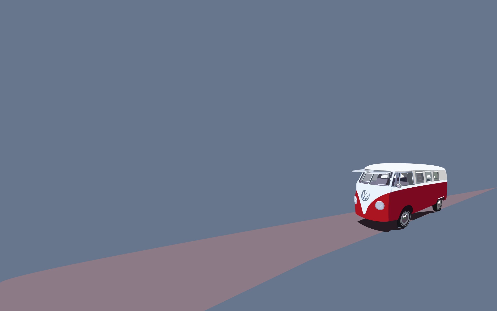

Welcome To My Blog's
Pra 1880-an Jauh sebelum orang lain memikirkan sesuatu yang bisa membawa mereka ke tempat lain dengan lebih muda, Leonardo da Vinci sudah membuat konsep “mobil” pada 1478. Konsep ini belum menggunakan mesin dan masih berupa sket di atas kertas. Ratusan tahun kemudian, sebuah kendaraan bermesin mulai dibuat manusia. Menggunakan mesin uap ini digunakan untuk membantu pergerakan kebutuhan militer Prancis pada 1870-an dalam membawa peralatan perang. Mesin uap ini dibantu oleh tiga roda penggerak. Kecepatannya saat itu diyakini sama dengan kecepatan manusia saat berjalan.
